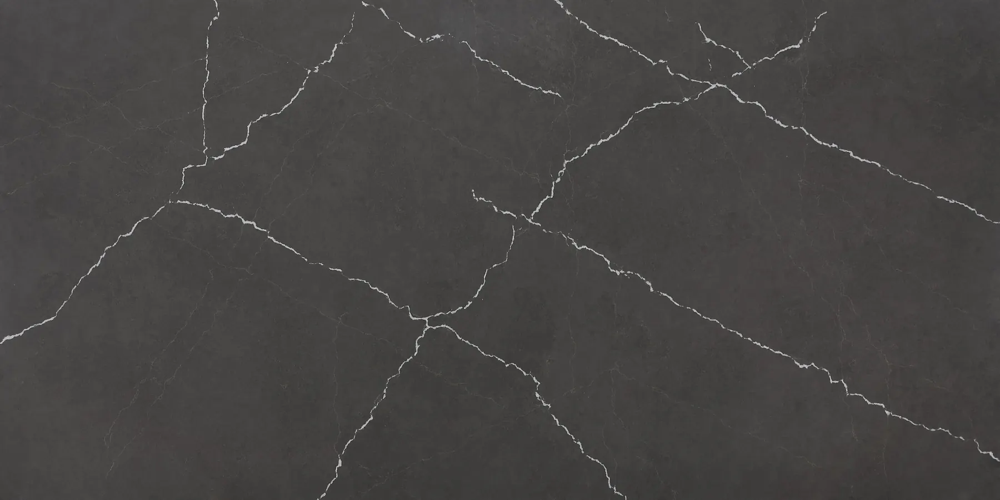
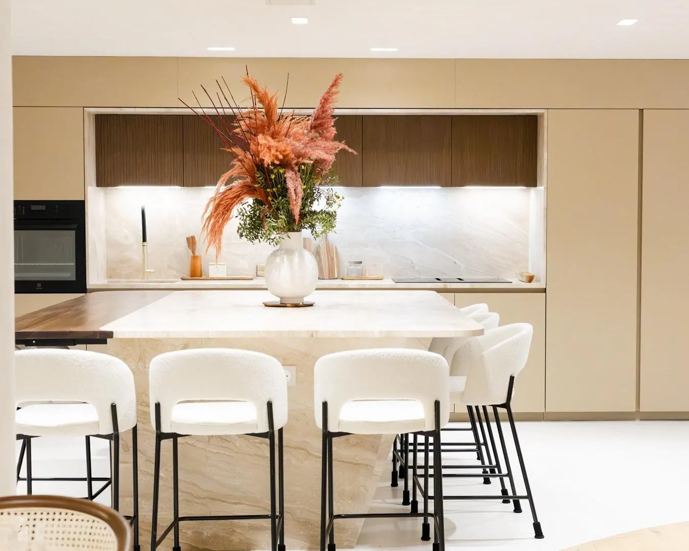
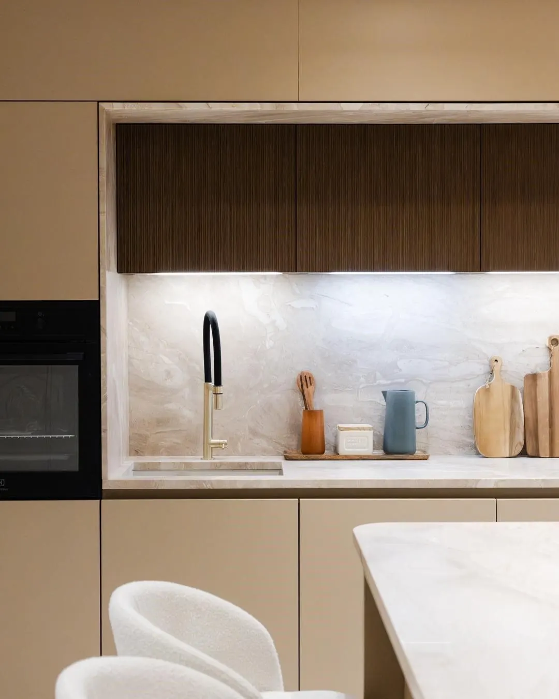

Fabricante industrial · Mafra, Portugal
Bancadas por medida, a nobreza da pedra
Das mais belas pedreiras de mármore, granito e quartzito às superfícies minerais de nova geração: trabalhamos cada bancada por medida na nossa oficina em Mafra e instalamo-la em sua casa, em Portugal e em França.
Materiais de exceção, entre elegância e durabilidade
Selecionamos cada material pelo seu carácter e pela sua capacidade de valorizar os seus espaços de forma duradoura. Escolha uma família para explorar as suas cores e acabamentos.



Minéralis, a superfície mineral que substitui o quartzo
Distribuído pela MStone Surfaces e trabalhado na nossa oficina em Mafra: uma superfície compósita à base de vidro reciclado de primeira produção, com baixo teor de sílica, que mantém o desempenho do quartzo. 19 cores, do branco estatuário aos tons de areia.
A excelência artesanal, o rigor industrial

Conceber, trabalhar, entregar o excecional
Na nossa fábrica de Mafra, transformamos as mais belas pedras naturais e materiais técnicos em bancadas por medida. Bancadas, lavatórios integrados, frentes de cozinha, revestimentos de parede: cada peça é pensada para durar e valorizar o seu espaço.
O nosso saber-fazer alia a precisão das máquinas CNC à exigência artesanal das nossas equipas. Entregamos e instalamos em Portugal e em França.
Os nossos materiais e as suas cores
Selecione um material para descobrir as suas cores e acabamentos. Toque numa cor para a ampliar e pedir um orçamento com um só clique.
Que material escolher para a sua utilização?
Cada material tem o seu temperamento. Este comparativo ajuda-o a identificar aquele que corresponde à forma como vive a sua cozinha ou a sua casa de banho; os nossos consultores afinam depois a escolha consigo.
| Material | Riscos | Calor | Manchas | Manutenção | Ideal para | Ação |
|---|
Comparativo indicativo, a afinar consoante a gama, o acabamento e a espessura. Os nossos consultores validam consigo a melhor escolha para o seu projeto.
Projetos por medida, da cozinha ao restaurante
Cozinhas, casas de banho, mesas, lareiras, bares e escritórios: uma seleção de projetos por medida realizados pelo grupo CB Surfaces.
O seu projeto em 4 etapas
Aconselhar
Ouvimos atentamente as suas necessidades e o seu orçamento. Os nossos especialistas orientam-no para o material e o acabamento mais adequados ao seu espaço e ao seu estilo de vida.
Medir
Os nossos medidores deslocam-se ao local para um levantamento rigoroso das medidas. Cada detalhe (recorte, ângulo, abertura para a placa) é registado para um ajuste perfeito.
Trabalhar
Na nossa oficina CNC em Mafra, os nossos artesãos trabalham cada material com uma precisão de uma décima de milímetro. O acabamento manual garante um resultado irrepreensível.
Instalar
As nossas equipas de instalação intervêm com cuidado e pontualidade. Cada superfície é instalada com rigor e, antes de partirmos, transmitimos-lhe os nossos conselhos de manutenção.


A precisão industrial ao serviço do artesanato
Herdeira de um saber-fazer familiar transmitido há mais de três gerações, a nossa fábrica em Mafra é o coração da nossa atividade. É aqui que nascem, com atenção a cada pormenor, todas as nossas bancadas, lavatórios integrados, frentes de cozinha e revestimentos de parede.
A nossa unidade industrial combina corte digital CNC e saber-fazer artesanal: ambos são indissociáveis para alcançar o nível de qualidade que os nossos clientes exigem.
O que lhe garantimos
Resposta em 48 horas úteis
Cada pedido de orçamento é analisado por um especialista, que o contacta se necessário antes de elaborar um orçamento rigoroso.
Medição no local
Os nossos medidores registam cada recorte, ângulo e abertura para a placa, para um ajuste perfeito na instalação.
Precisão CNC
Corte digital com precisão de uma décima de milímetro, seguido de acabamento manual das arestas e dos recortes na nossa oficina.
Instalação pelas nossas equipas
Instalação cuidada em Portugal e em França, com conselhos de manutenção adaptados ao seu material.
Garantias dos fabricantes
Trabalhamos com marcas que garantem as suas superfícies: até 25 anos consoante a gama, 20 anos no Minéralis.
Visita à fábrica
Venha ver as chapas e as amostras ao vivo em Igreja Nova, mediante marcação, antes de fazer a sua escolha.
Os nossos fornecedores
Trabalhamos com as maiores marcas de materiais, que transformamos na nossa fábrica em Mafra.
Distribuidor do Minéralis, superfície mineral compósita com 85 % de vidro reciclado que substitui o quartzo, e de uma coleção de cerâmica de grande formato. Chapas de 3 200 × 1 600 mm.
MinéralisCerâmicaGarantia de 20 anos Ver as cores → Nikolaus Bagnara AGPedra natural · Pedreiras própriasEspecialista internacional em pedras naturais, com pedreiras próprias: Alps Glitter, Azul Aran®, Black Pepper, Labradorite Blue, Nero Assoluto Zimbabwe…
GranitoMármoreQuartzito Ver as cores → DuPont™ Corian®Superfície sólida · Desde 1967A referência das superfícies sólidas. Lavatórios integrados sem juntas, termoformável, reparável. Certificado NSF para contacto alimentar. Mais de 100 cores.
Sem juntasReparável100+ cores Ver as cores → CosentinoDekton® · Silestone® · Sensa · TextaGrupo espanhol de referência mundial: Dekton® (sinterização TSP), Silestone® (quartzo premium), Sensa e Texta (granitos tratados).
Dekton®Silestone®SensaTexta Ver as cores → CompacQuartzo tecnológico · EspanhaColeções Ice Max™, Luxury, Unique e Elegance. Homogeneidade perfeita e dureza Mohs 7. Certificado NSF para contacto alimentar.
Ice Max™LuxuryUnique Ver as cores →Junte-se à nossa rede de parceiros
Fabricantes de cozinhas, arquitetos, artesãos, distribuidores: beneficie de condições preferenciais, de um catálogo alargado e de um interlocutor dedicado para todas as suas obras.
Já é parceiro?
A sua área online (preços personalizados, encomendas, acompanhamento do fabrico) está em preparação. Entretanto, o seu interlocutor dedicado continua disponível por telefone e por e-mail.
Preços preferenciais
Descontos adaptados aos seus volumes de compra, negociados diretamente com a nossa direção comercial. Quanto mais a sua atividade cresce, melhores ficam as suas condições.
Catálogo alargado
Acesso às gamas completas dos nossos fornecedores, incluindo o Minéralis e a cerâmica de grande formato MStone Surfaces, com documentação técnica.
Acompanhamento dedicado
Um interlocutor único para todas as suas obras, do pedido de orçamento até à entrega: rapidez de resposta e comunicação transparente.
Tudo o que precisa de saber antes de avançar
Em quanto tempo recebo o meu orçamento?
Cada pedido é analisado por um especialista, que lhe envia uma proposta à medida em 48 horas úteis. Se faltar alguma informação (dimensões, recortes, acabamento), entra em contacto consigo antes de elaborar um orçamento rigoroso.
Fazem entrega e instalação em Portugal e em França?
Sim. Fabricamos na nossa fábrica em Mafra e fazemos a entrega e a instalação em Portugal e em França, com as nossas próprias equipas. Se tiver o seu próprio instalador, também pode optar apenas pelo fornecimento.
Posso ver os materiais antes de escolher?
Com certeza. Venha ver as chapas e as amostras ao vivo na nossa fábrica em Igreja Nova (Mafra), de segunda a sexta-feira, das 8h00 às 17h30, apenas mediante marcação.
Qual é a diferença entre quartzo e quartzito?
O quartzito é uma pedra natural extraída de pedreiras: dureza Mohs 7, veios semelhantes aos do mármore e maior resistência aos ácidos e às manchas do que este.
O quartzo (Silestone®, Compac, Stone Italiana) é uma superfície compósita à base de quartzo: não porosa, homogénea, dispensa impermeabilização e é muito fácil de manter.
O que é o Minéralis?
O Minéralis, distribuído pela MStone Surfaces, é uma superfície mineral compósita que substitui o quartzo: 85 % de vidro reciclado de primeira produção, baixo teor de sílica, resistência até 180 °C e garantia de 20 anos. Existe em 19 cores, que trabalhamos por medida em Mafra.
O mármore é adequado para uma cozinha?
O mármore é sublime, mas mais macio (dureza Mohs 3-4) e sensível aos ácidos: exige impermeabilização e alguns cuidados na cozinha. Destaca-se em casas de banho, mesas e peças de prestígio.
Para uma cozinha de uso intensivo com efeito mármore, recomendamos antes o quartzito, a cerâmica ou um quartzo com veios.
Como funciona a medição?
Os nossos medidores deslocam-se ao local para registar com precisão cada recorte, ângulo e abertura para a placa. O fabrico começa com base nesse levantamento, o que garante um ajuste perfeito na instalação.
Que garantias têm os materiais?
Trabalhamos com marcas que garantem as suas superfícies: até 25 anos consoante a gama, e 20 anos no Minéralis. Na instalação, transmitimos-lhe os conselhos de manutenção adequados ao seu material.
Trabalham com profissionais?
Sim. Fabricantes de cozinhas, arquitetos, artesãos e distribuidores beneficiam de preços preferenciais, de um catálogo alargado e de um interlocutor dedicado. Visite a área de revendedores para se juntar à nossa rede.
Pedido de orçamento
Descreva o seu projeto em três passos. Os nossos especialistas enviam-lhe uma proposta à medida em 48 horas úteis.
- Análise por um especialista, que o contacta, se necessário
- Medição no local antes do fabrico
- Só fornecimento ou instalação pelas nossas equipas
- Poderá anexar plantas e fotografias ao e-mail
Fale connosco
A nossa equipa está disponível de segunda a sexta-feira para responder às suas questões e organizar a sua visita à fábrica.
- Fábrica & sede
- Estrada Nacional N°9, Km 29
Igreja Nova · 2640-339
Mafra · PortugalComo chegar - Portugal
- +351 219 672 216
- França
- +33 (1) 88 32 64 49
- direction@cbproducao.com
- Horário
- Seg – Sex · 8h00 – 17h30Visitas apenas mediante marcação
- Minéralis
- mstone-surfaces.com
Igreja Nova · Mafra · Portugal